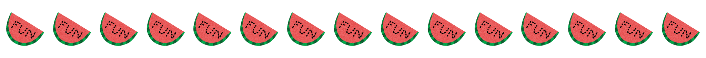
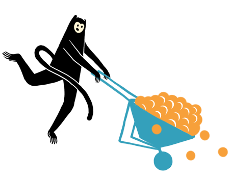
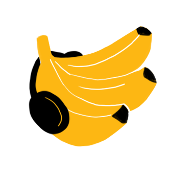
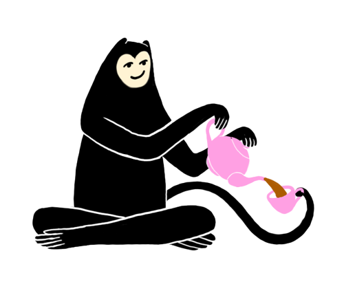
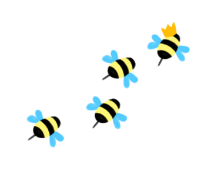

Aquest esdeveniment ja ha tingut lloc. Busques el pròxim? Monkey Business 3 →
Playground Bureau's MONKEY BUSINESS 2: Where the Goodtimes Bloom
25 - 28 de setembre de 2025
100% orgànic certificat, ximpleries generades per humans:

AAAAAAAAAAAAAAAAAAAAAAAAAAAAAAAAAAAAAAAAAAAAAAAAAAAAAAAAAAAAAAAAAAAAAAAAAAAAAAAAAAAAAAAAAAAAAAAAAAAAAAAAAAAAAAAAAAAAAAAAAAAAAAAAAAAA (panteixant i agafant aire) AAAAAAAAAAAAAAAAAAAAAAAAAAAAAAAAAAAAAAAAAAAAAAAAAAATENCIÓ! HEM TORNAT, MICOS PRECIOSOS!
Estem més que emocionats d'anunciar la segona instal·lació del Meticulously Orchestrated Neurokinetic Kontrolled Environment for the Yearly Boosting of Universal Sociability, Instilling Neighborly Euphoria, and Spreading Synergy. Quan vam descobrir que les primeres lletres formen M-O-N-K-E-Y B-U-S-I-N-E-S-S, no ens ho podíem creure. Els matemàtics del Bureau van calcular que les probabilitats eren d'1 entre 100 quintilions. No estem segurs del que significa, però sona bastant especial.
La 1a edició va ser un gran èxit, gràcies a tots vosaltres. Per a la 2a edició, fem 3 nits i 4 dies. Sí, ho heu sentit bé. I tindrem 56 participants més que l'any passat. Hem tornat a demanar als nostres matemàtics que facin els càlculs, i han confirmat un augment projectat del 78,90% en alegria i connexió.
Després d'una extensa investigació de camp, els nostres agrònoms del Bureau han descobert un dipòsit rar de terra rica en Goodtimesium a la nostra nova ubicació. Estem convertint tot el recinte del festival en una granja experimental de fruites on cultivarem i collirem els productes més potents infusionats amb Goodtimesium mai cultivats! Un pas crucial per aturar la propagació de la Separatoxina.

Com sempre, podeu esperar:
Hem decidit provar sort una altra vegada, i vam extreure amb cura la lletra inicial de cada paraula d'aquesta secció. Formava:
"AWABYBMWBTTATSIOMONKEFTYBOUSINEASSWWLTTNSMBWCBOLTBMCTOAIQWNSWTMBISLALTYWDNADYYHTRAWUOCTPMTLYWOAAOMTCTNATCAPIIJACFLYAEFROBAHDARDOGSIONLWTTFESGIAEFFWWBGAHTMPGPECAAYCESWTMYDWPYBYSFDFTNDSQSTTTSTIMTAMEISBTSWDCCBFJFALWLOWTPMOWYLOTSNRTMCBWPWA".
No estem segurs del que significa, però sona bastant especial.

La idea és que no hauríeu de gastar ni un cèntim al recinte ja que tot està inclòs. (Les úniques excepcions són activitats especials paral·leles com massatges)
Enllaç per a les entrades a continuació.
La Comissió Estratègica del Bureau per Expandir Ments i Provar Coses Noves Mentre Ens Divertim Junts ha finalitzat el nostre programa de tallers! Des d'experiments botànics fins a pràctiques de moviment, expressió creativa fins a viatges interiors - tenim alguna cosa per a tothom.
En cotxe: 2 hores des de Barcelona, 1 hora des de Girona, i 30 minuts des de Figueres.
En transport públic: 2 hores fins a Figueres des de Barcelona, després un trajecte en taxi de 30 minuts fins al recinte (uns 30 euros).
A peu: 36 hores des de Barcelona, 5 hores des de Figueres.
En helicòpter: No recomanat per la manca d'una pista d'aterratge adequada.
La ubicació exacta s'inclourà al correu electrònic de confirmació de l'entrada :)
Us demanem a cadascú de vosaltres que contribuïu amb la vostra ampolla preferida d'alcohol, refresc o una combinació creativa d'ambdós al nostre bar comunitari. No us preocupeu, també ens proveïrem d'aigua, refrescos, licors populars i algunes cerveses. Un cop estem tots preparats, les begudes seran gratuïtes — sense comptes, sense càrrecs, sense necessitat de portar monedes! Però això no vol dir que recolzem emborratxar-se completament. Si us plau, gaudiu amb responsabilitat :)

La molt aclamada Tea House tornarà aquest any! La Tea House 2.0 acollirà tallers durant el dia i es convertirà en un saló acollidor a la nit. Si la pista de ball és massa per a tu, sempre pots venir aquí per relaxar-te i fer nous amics. També tindrem molta aigua potable disponible al bar i a la Tea House.
Si us plau, porteu una tenda! Tenim un parell de zones on podeu acampar. Els càmpings no estan just al costat de les pistes de ball, així que hauríeu de dormir bé a la nit! Això també significa: feu soroll a les zones de festa i respecteu els que dormen! Les furgonetes i vehicles per acampar també són benvinguts — hi ha una capacitat limitada per a vehicles d'acampada, així que si us plau envieu-nos un correu electrònic i assegureu-vos un espai.
Dissabte és el "Dia Verd". Si us plau, porteu alguna cosa verda! Ja sigui un barret verd o un vestit complet de croma, volem verd. Si us oblideu de portar verd, podrem proporcionar-vos superglu per enganxar fulles directament a la vostra pell. També acceptarem samarretes de la banda Green Day, si en teniu per casa.
Hi ha un llac preciós, porteu el banyador!
Nota: Tot i que us oferim aquesta informació en català, l'anglès és l'idioma oficial de comunicació del festival, ja que som una trobada internacional amb participants de molts països diferents.
